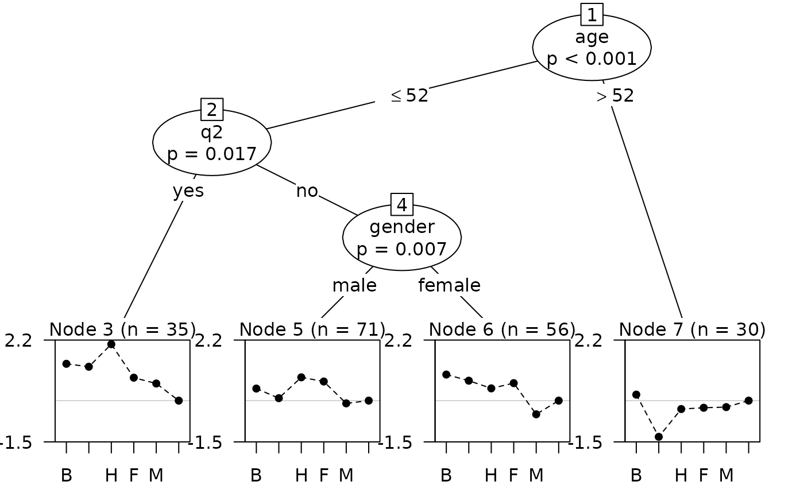

Recursive partitioning based on Plackett-Luce models.
Arguments
- formula
A symbolic description of the model to be fitted, of the form
y ~ x1 + ... + xnwhereyshould be an object of classgrouped_rankingsandx1, ...,xnare used as partitioning variables.- data
An optional data object containing the variables in the model. Either a data frame of variables in
formulaor a list of length 2 giving data frames for variables informulaand inworth.- worth
A optional formula specifying a linear model for log-worth. If
NULL, worth is estimated separately for each item withPlackettLuce(). Otherwise, the model in each node of the tree id fitted withpladmm().- na.action
how NAs are treated for variables in
formula, applied to the underlying rankings.- cluster
an optional vector of cluster IDs to be employed for clustered covariances in the parameter stability tests, see
mob.- ref
an integer or character string specifying the reference item (for which log ability will be set to zero). If NULL the first item is used.
- ...
additional arguments, passed to
PlackettLuceofpladmm().
Details
Plackett-Luce trees are an application of model-based recursive partitioning
(implemented in mob) to Plackett-Luce models for
rankings. The partitioning is based on ranking covariates, e.g. attributes of
the judge making the ranking, or conditions under which the ranking is made.
The response should be a grouped_rankings object that groups
rankings with common covariate values. This may be included in a data frame
alongside the covariates.
Most arguments of PlackettLuce can be passed on by pltree.
However, Plackett-Luce tree with fixed adherence are not implemented.
Arguably it makes more sense to estimate adherence or reliability within
the nodes of the Plackett-Luce tree.
Various methods are provided for "pltree" objects, most of them
inherited from "modelparty" objects (e.g. print,
summary), or "bttree" objects (plot). The plot
method employs the node_btplot
panel-generating function. The See Also
section gives details of separately documented methods.
See also
bttree For fitting Bradley-Terry trees
(equivalent to the Plackett-Luce model for paired comparisons without ties).
coef, vcov, AIC and predict methods are documented on
pltree-summaries.
itempar, extracts the abilities or item parameters
in each node of the tree using itempar.PlackettLuce.
fitted, computes probabilities for the observed
choices based on the full tree.
Examples
# Bradley-Terry example
if (require(psychotree)){
## Germany's Next Topmodel 2007 data
data("Topmodel2007", package = "psychotree")
## convert paircomp object to grouped rankings
R <- as.grouped_rankings(Topmodel2007$preference)
## rankings are grouped by judge
print(R[1:2,], max = 4)
## Topmodel2007[, -1] gives covariate values for each judge
print(Topmodel2007[1:2, -1])
## fit partition model based on all variables except preference
## set npseudo = 0 as all judges rank all models
tm_tree <- pltree(R ~ ., data = Topmodel2007[, -1], minsize = 5,
npseudo = 0)
## plot shows abilities constrained to sum to 1
plot(tm_tree, abbreviate = 1, yscale = c(0, 0.5))
## instead show log-abilities with Anja as reference (need to used index)
plot(tm_tree, abbreviate = 1, worth = FALSE, ref = 6,
yscale = c(-1.5, 2.2))
## log-abilities, zero sum contrast
itempar(tm_tree, log = TRUE)
}
#> Loading required package: psychotree
#> Loading required package: partykit
#> Loading required package: grid
#> Loading required package: libcoin
#> Loading required package: mvtnorm
#>
#> Attaching package: ‘mvtnorm’
#> The following object is masked from ‘package:gnm’:
#>
#> Mult
#> Loading required package: psychotools
#> 1
#> "Barbara > Anni, Barbara > Hana, Anni > Hana, Barbara > Fiona, ..."
#> 2
#> "Anni > Barbara, Hana > Barbara, Hana > Anni, Fiona > Barbara, ..."
#> gender age q1 q2 q3
#> 1 male 66 no no no
#> 2 male 21 yes yes yes

#> Barbara Anni Hana Fiona Mandy Anja
#> 3 0.3252815 0.2193055 1.03734300 -0.1785927 -0.39080852 -1.0125288
#> 5 0.1106734 -0.2392155 0.51830152 0.3662483 -0.42801793 -0.3279899
#> 6 0.5715647 0.3486194 0.06927133 0.2590188 -0.87250735 -0.3759669
#> 7 0.5343475 -1.0000476 0.01067104 0.0575107 0.08093274 0.3165856